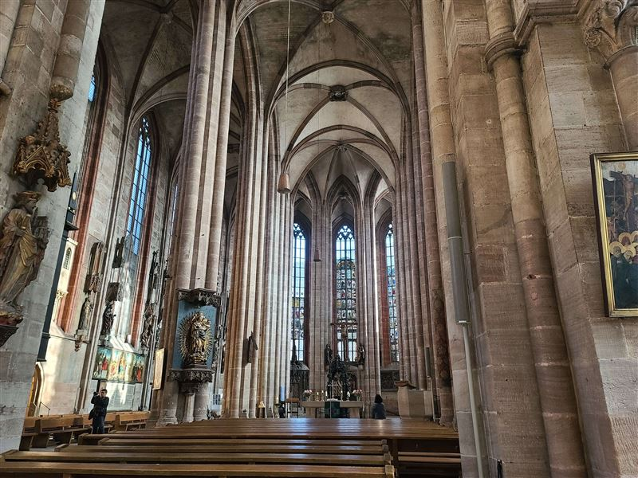
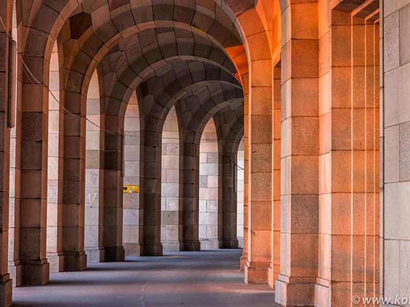

Explore Nuremberg
A Brief History
Nuremberg developed as a free imperial city with major commercial, artistic, and political importance in the Holy Roman Empire from the 11th century. The castle hill, market square, and parish churches recall medieval prosperity and Albrecht Dürer's workshop. The city hosted imperial diets and later 19th-century national commemorations before the Nazi party rallies of the 1930s left a difficult 20th-century legacy addressed by documentation centers and memorials.
Attractions Map
Top Sights & Activities

Nuremberg Castle (Kaiserburg)
Nuremberg Castle crowns the north edge of the old city and served emperors of the Holy Roman Empire during their stays in the imperial city. The Palas, chapel, and Sinwell Tower preserve medieval and later fortifications. Guided tours explain Nuremberg's role in imperial administration and justice.

Hauptmarkt and Schöner Brunnen
The Hauptmarkt is Nuremberg's main market square, framed by the Frauenkirche and gabled townhouses. The Schöner Brunnen, a Gothic fountain shrine of the 14th century, stands at its center. Weekly markets and the Christkindlesmarkt continue centuries of commerce and civic ceremony here.

Germanisches Nationalmuseum
The Germanisches Nationalmuseum occupies a former Carthusian monastery and holds one of the broadest collections of German cultural history, from prehistory to modern art. Dürer holdings, folk art, and scientific instruments anchor the displays. The museum connects Nuremberg with national narratives of craft, art, and daily life.

Weißgerbergasse
Weißgerbergasse preserves a run of medieval and early modern timber-framed houses that recall the tanners and craftsmen who worked in this quarter. Cafés and small shops now line the pedestrian street. It offers one of the clearest views of the old city's domestic architecture away from the main squares.

Nuremberg Frauenkirche
The Frauenkirche was built on the Hauptmarkt in the 14th century at the behest of Emperor Charles IV. Its west facade includes the Männleinlaufen clock with moving figures from 1509. The church remains a major Gothic monument tied directly to the civic life of the square.

Maxbrücke
Maxbrücke crosses the Pegnitz at the eastern edge of the old town, linking quarters around the river islands. Stone arches and adjacent half-timbered houses reflect the water-based topography of central Nuremberg. The bridge is a short walk from the castle and Hauptmarkt along the river.

Sebalduskirche Nürnberg
St Sebald is one of the two great parish churches of historic Nuremberg, with Romanesque origins and Gothic enlargement near the castle quarter. The shrine of Saint Sebald and carved interior drew pilgrims and patrons. Its position reflects the religious geography of the medieval imperial city.

Kongresshalle
The Kongresshalle at the former Nazi Party Rally Grounds was begun in 1935 to designs inspired by the Colosseum and left unfinished. The vast brick shell now houses documentation on the regime's architecture and rallies in Nuremberg. The site confronts one of the city's difficult 20th-century legacies.